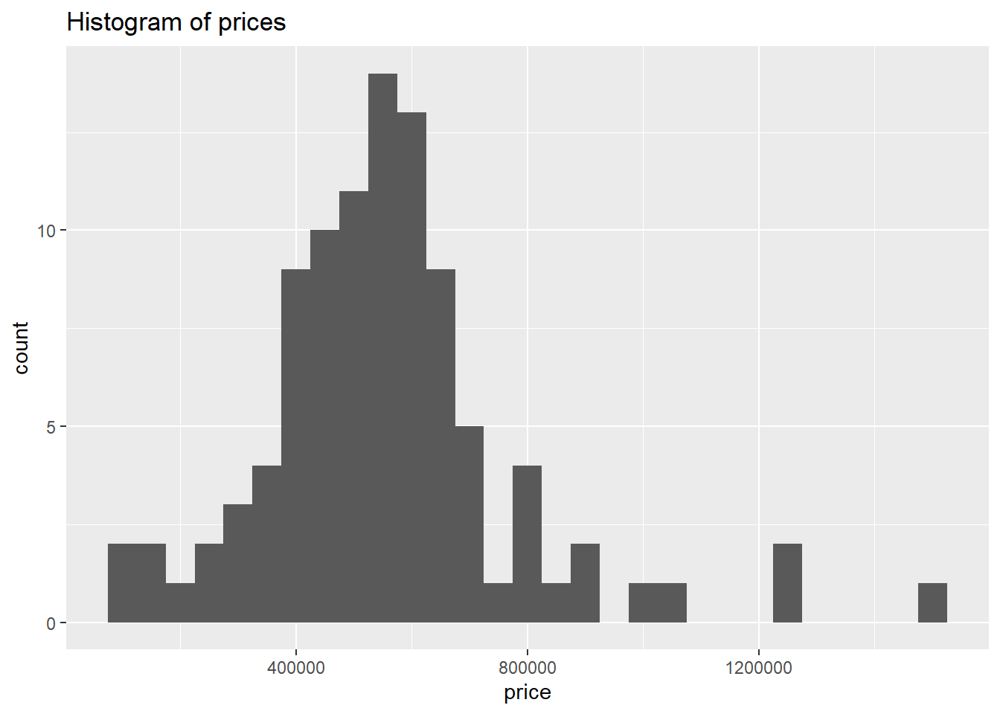
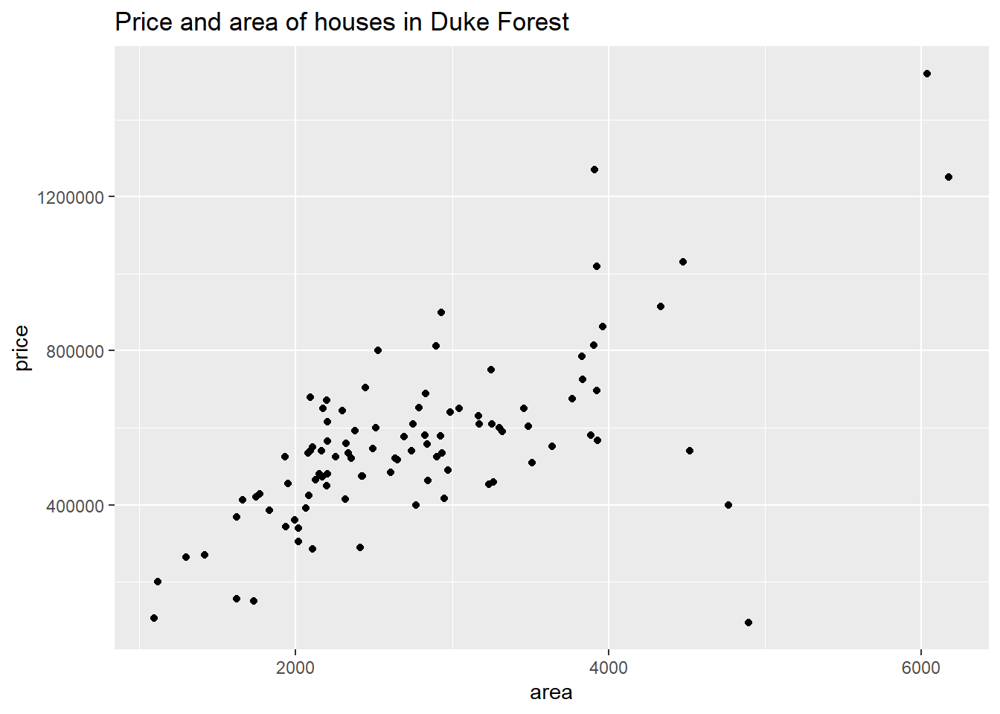

In this analysis, we build a model predicting sale prices of houses based on data on houses that were sold in the Duke Forest neighborhood of Durham, NC around November 2020. Let’s start by loading the packages we’ll use for the analysis.
library(openintro) # for data
Warning: package 'openintro' was built under R version 4.1.3
Warning: package 'airports' was built under R version 4.1.3
Warning: package 'cherryblossom' was built under R version 4.1.3
Warning: package 'usdata' was built under R version 4.1.3
library(tidyverse) # for data wrangling and visualization
Warning: package 'tidyverse' was built under R version 4.1.3
Warning: package 'ggplot2' was built under R version 4.1.3
Warning: package 'tibble' was built under R version 4.1.3
Warning: package 'tidyr' was built under R version 4.1.3
Warning: package 'readr' was built under R version 4.1.3
Warning: package 'dplyr' was built under R version 4.1.3
Warning: package 'stringr' was built under R version 4.1.3
library(knitr) # for tables
Warning: package 'knitr' was built under R version 4.1.3
library(broom) # for model summary
Warning: package 'broom' was built under R version 4.1.3
We present the results of exploratory data analysis in Section 2 and the regression model in Section 3.
Exploratory data analysis
The data contains 98 houses. As part of the exploratory analysis let’s visualize and summarize the relationship between areas and prices of these houses.
Data visualization
Figure 1 shows two histograms displaying the distributions of price and area individually.
ggplot(duke_forest, aes(x = price)) +geom_histogram(binwidth =50000) +labs(title ="Histogram of prices")ggplot(duke_forest, aes(x = area)) +geom_histogram(binwidth =250) +labs(title ="Histogram of areas")

(a) Histogram of prices
(b) Histogram of areas
Figure 1: Histograms of individual variables
Figure 2 displays the relationship between these two variables in a scatterplot.
ggplot(duke_forest, aes(x = area, y = price)) +geom_point() +labs(title ="Price and area of houses in Duke Forest")

Figure 2: Scatterplot of price vs. area of houses in Duke Forest
Summary statistics
Table 1 displays basic summary statistics for these two variables.